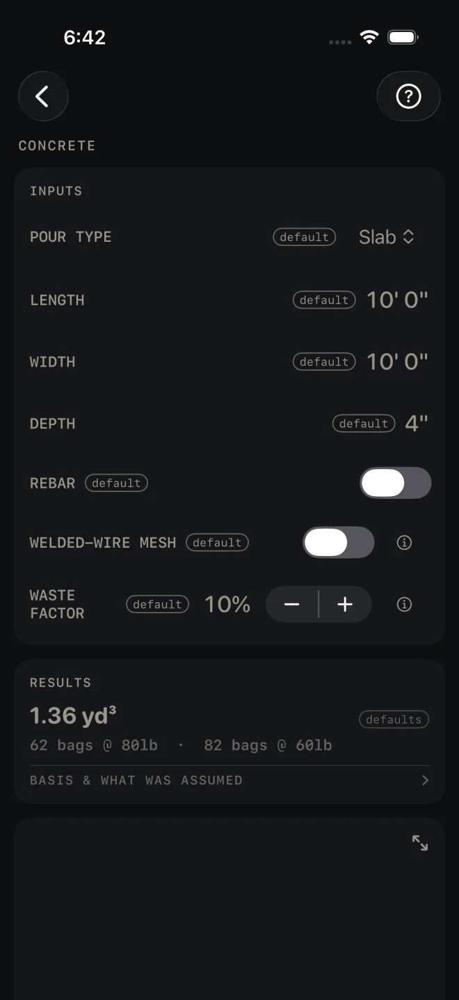
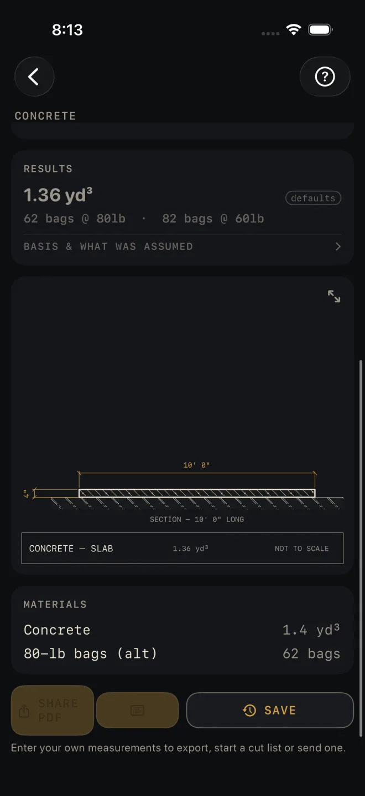

Concrete
What it's for
Figures how much concrete a pour takes: a slab, a footing, a wall, round columns or a set of formed steps. You get cubic yards, the bag count for a small pour, rebar footage or mesh sheets if you ask for them, a section drawing and a material list. It is a quantity takeoff. It does not check anything against code.
Step by step
The example is the screen as it opens: a 10' 0" by 10' 0" slab, 4" thick, 10% waste.

1 2 3 4 5- Tap POUR TYPE and pick Slab, Footing, Wall, Column or Steps. The rows under it change to suit. The list for each type is below.
- Enter the dimensions. For a slab that is LENGTH and WIDTH measured inside the forms, and DEPTH, the slab thickness. Tap a value and type it in feet and inches.
- Turn on REBAR if you want bar footage. Two more rows appear: REBAR SIZE (#3 to #6) and REBAR SPACING, the on-center spacing of the grid. On a slab you can turn on WELDED-WIRE MESH instead, or as well. Mesh is offered for slabs only.
- Set WASTE FACTOR with the − and + buttons. It moves in 5% steps and is added to the concrete volume before the yards and bags are figured.
- Read the answer in RESULTS. On the defaults it reads 1.36 yd³, then 62 bags @ 80lb · 82 bags @ 60lb.
What each pour type asks for
- Slab — LENGTH, WIDTH, DEPTH. Length and width are entered as feet and inches, depth as the slab thickness.
- Footing — LENGTH is the run of the footing. WIDTH and DEPTH are the cross-section of the trench or form. If you switch here from Slab, check the width: the same number is now read as inches, so the slab's 10' 0" shows as 10".
- Wall — LENGTH, HEIGHT from top of footing to top of wall, and THICKNESS.
- Column — DIAMETER of the round form, HEIGHT, and COLUMNS, how many you are pouring (1 to 20).
- Steps — STEPS (1 to 20), RISE PER STEP, RUN PER STEP and WIDTH across the stair. The volume is for solid formed steps, where each step stands on concrete all the way down.
Reading the results

6 9 10 11- The headline is cubic yards, waste included. While every input is still a default the card is dimmed and tagged defaults. It clears when you change an input.
- Bags or truck. Up to 3 yd³ the line under the headline gives bag counts for 80 lb and 60 lb bags. Over that it reads truck territory — order ready-mix and the bag row drops out of the material list.
- Rebar. With REBAR on, a second line gives total feet of bar. It is bar in the pour only. The material list row says to add laps and round to stock lengths when you order. For a wall it is a single curtain of bar. For a column it is a 4-bar cage with ties at your spacing, and the row says to verify per code.
- BASIS & WHAT WAS ASSUMED — tap it to open. On this screen it holds the ordering advice: order in 1/4-yd steps, small loads draw short-load fees, and steps poured against fill need less than the solid figure.
- The drawing is a section of the pour with your dimensions on it. Pinch to zoom, double-tap to go back, and use the expand button at its top right for full screen. See Drawings.
- MATERIALS lists concrete to the tenth of a yard, the 80-lb bag count as an alternative, rebar in lineal feet, and mesh sheets when mesh is on.
There are no red flags on this screen. Nothing here is a pass or a fail.
The Concrete calculator is free. SHARE PDF and SAVE are
part of Pro, a one-time purchase. SHARE PDF and the list button beside it stay grey until you have
entered your own measurements, so a sheet of sample numbers never reaches a job. SAVE stays lit, but until then a tap only answers Enter your job's numbers first
and saves nothing.
Common mistakes
- Switching pour type and not re-checking the numbers. WIDTH is feet and inches across a slab but the cross-section of a footing. HEIGHT is shared by Wall and Column. Read every row after you change POUR TYPE.
- Entering a nominal depth. A slab screeded to the top of 2x forms is thinner than the nominal size of the form board. Enter the thickness you will actually pour.
- Setting waste to 0% on a pour over uneven subgrade. The volume is the exact geometric figure plus the waste you set, nothing more.
- Using the solid Steps figure for steps cast over compacted fill. Open BASIS & WHAT WAS ASSUMED: the screen tells you that pour needs less.
Related
- Excavation — the dig and the gravel under the slab
- Masonry — the block wall that sits on the footing
- Deck — footing count for a deck
- Drawings
- Cut sheets and templates — what SHARE PDF sends
- Saving and history